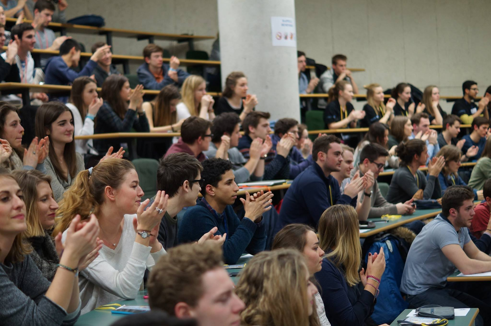
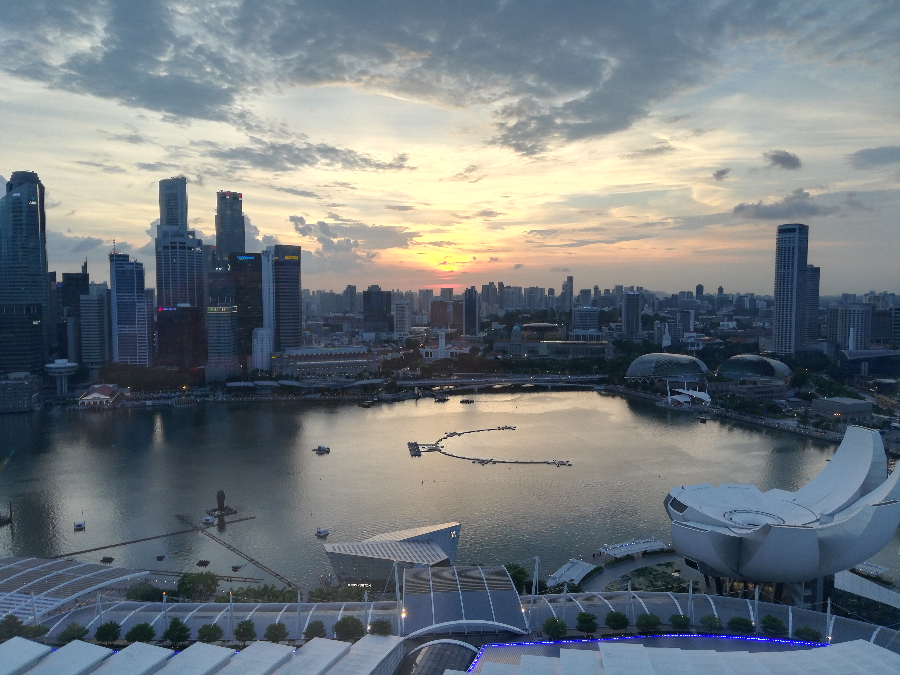
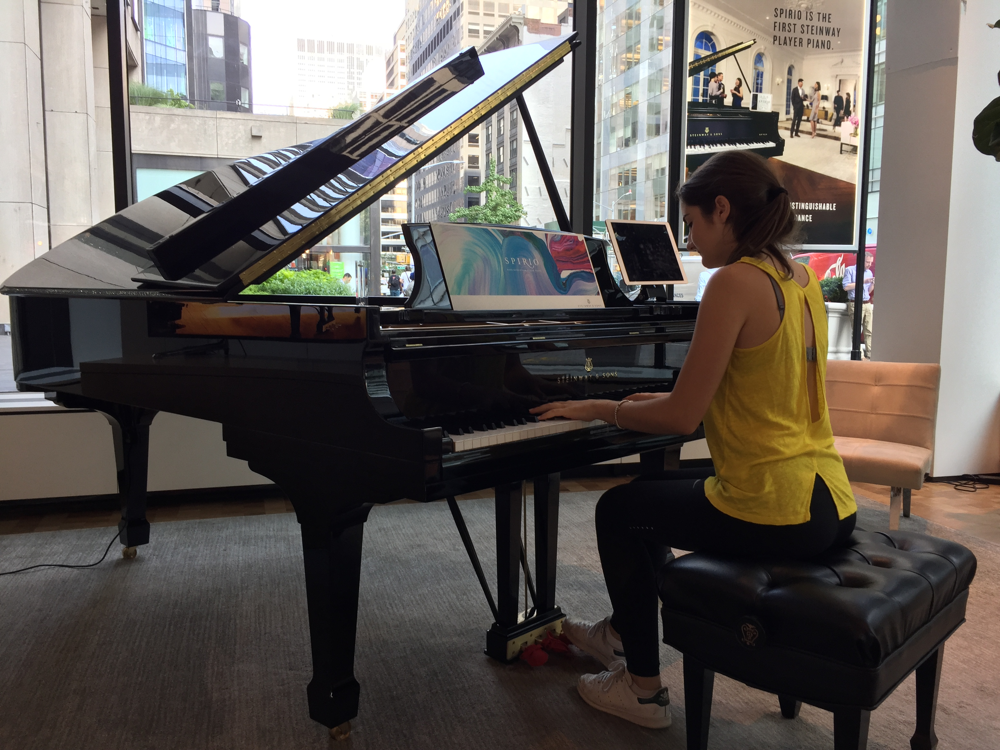

Hello, I'm Clotilde
I love entrepreneurship and innovation, the advertising industry, multicultularism and art. I started a
master in digital marketing and innovation to develop my skills and learn more about new digital
instruments.
Thinking outside the box, I have a sincere interest in digital and social innovation to challenging
actual issues. Experienced in digital media, direct and programmatic advertising in the international
markets, I am told that I am a creative and hard-working person, pugnacious and involved, with good
interpersonal skills.I want to learn everyday more and enjoy new challenges.
Entrepreneurship and Innovation
I am passionate about Entrepreneurship and Innovation. I have participated to many entrepreneurial projects: my group was winner of the competition 1 night to innovate and in second position in a Start-up Weekend for social innovation. I try keeping an entrepreneurial spirit to always grasp the opportunities to learn, innovate and take bold initiatives. 
Advertising industry
I am working for the brands Oh!MyMag and Gentside in programmatic advertising as a
sales account manager for one year and I really enjoy this very new industry. Developing the European
and LATAM markets, I like connecting with people across cultures, understanding their needs and
analysing how we can get better together.

Multiculturalism
I enjoy travelling and having experiences in a foreign country. What I pefer is to discover a new culture, adapt myself to local habits and to share my knowledge and my time with people I have never met before. My next travel will be in Africa or South America. 
Art
I play the piano since I am six years old. I have spent 11 years in Nice music
academy. Today, I would like to learn and start playing jazz music.
I am glad to live in Paris, it is a wonderful city, especially for one thing: arts education
outings.

Contact me
I will be glad to connect with you!